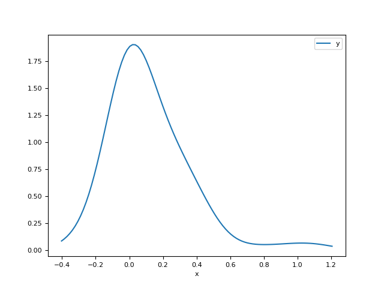
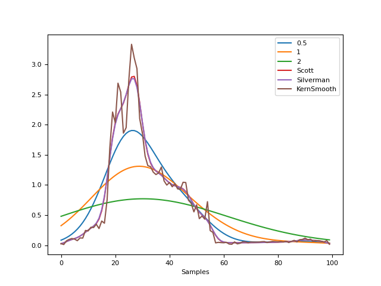
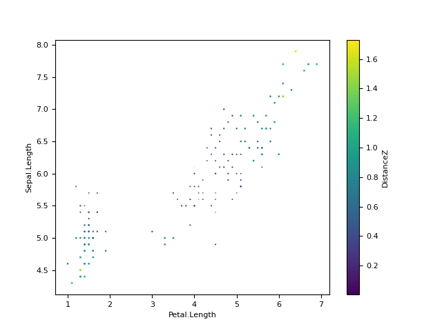
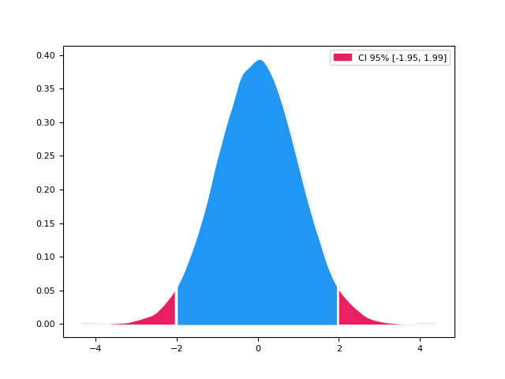
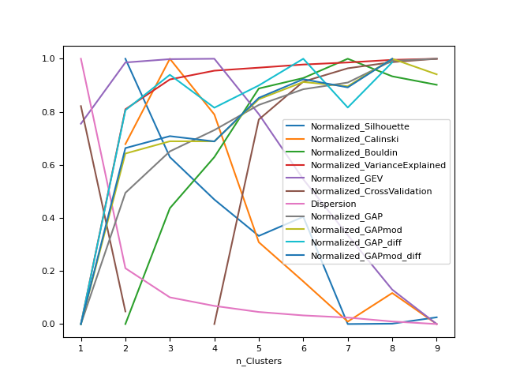
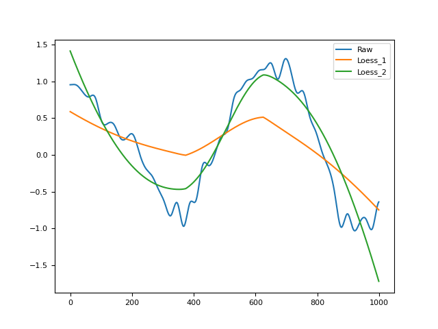
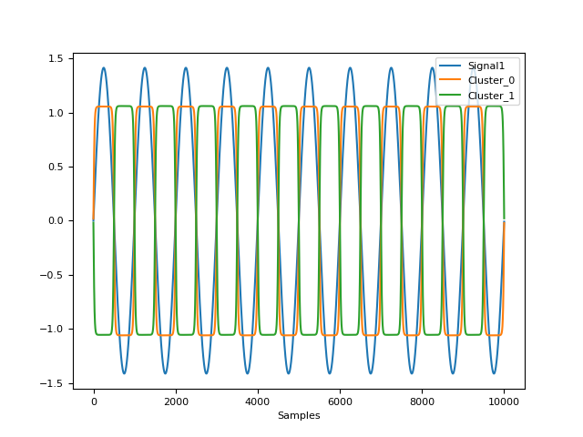

Stats
Contents
Stats#
Utilities#
correlation()#
- cor(x, y, method='pearson', show=False)[source]#
Density estimation
Computes kernel density estimates.
- Parameters
x (Union[list, np.array, pd.Series]) – Vectors of values.
y (Union[list, np.array, pd.Series]) – Vectors of values.
method (str) – Correlation method. Can be one of ‘pearson’, ‘spearman’, ‘kendall’.
show (bool) – Draw a scatterplot with a regression line.
- Returns
r – The correlation coefficient.
Examples
In [1]: import neurokit2 as nk In [2]: x = [1, 2, 3, 4, 5] In [3]: y = [3, 1, 5, 6, 6] In [4]: corr = nk.cor(x, y, method="pearson", show=True) In [5]: corr Out[5]: 0.80225745323842
{kind=link}
density()#
- density(x, desired_length=100, bandwidth='Scott', show=False, **kwargs)[source]#
Density estimation.
Computes kernel density estimates.
- Parameters
x (Union[list, np.array, pd.Series]) – A vector of values.
desired_length (int) – The amount of values in the returned density estimation.
bandwidth (float) – Passed to the
methodargument from thedensity_bandwidth()function.show (bool) – Display the density plot.
**kwargs – Additional arguments to be passed to
density_bandwidth().
- Returns
x – The x axis of the density estimation.
y – The y axis of the density estimation.
See also
density_bandwidthExamples
In [1]: import neurokit2 as nk In [2]: signal = nk.ecg_simulate(duration=20) In [3]: x, y = nk.density(signal, bandwidth=0.5, show=True)
# Bandwidth comparison In [4]: _, y2 = nk.density(signal, bandwidth=1) In [5]: _, y3 = nk.density(signal, bandwidth=2) In [6]: _, y4 = nk.density(signal, bandwidth="scott") In [7]: _, y5 = nk.density(signal, bandwidth="silverman") In [8]: _, y6 = nk.density(signal, bandwidth="kernsmooth") In [9]: nk.signal_plot([y, y2, y3, y4, y5, y6], ...: labels=["0.5", "1", "2", "Scott", "Silverman", "KernSmooth"]) ...:
{kind=link}
{kind=link}
distance()#
- distance(X=None, method='mahalanobis')[source]#
Distance
Compute distance using different metrics.
- Parameters
X (array or DataFrame) – A dataframe of values.
method (str) – The method to use. One of ‘mahalanobis’ or ‘mean’ for the average distance from the mean.
- Returns
array – Vector containing the distance values.
Examples
In [1]: import neurokit2 as nk # Load the iris dataset In [2]: data = nk.data("iris").drop("Species", axis=1) In [3]: data["Distance"] = nk.distance(data, method="mahalanobis") In [4]: fig = data.plot(x="Petal.Length", y="Petal.Width", s="Distance", c="Distance", kind="scatter")
In [5]: data["DistanceZ"] = np.abs(nk.distance(data.drop("Distance", axis=1), method="mean")) In [6]: fig = data.plot(x="Petal.Length", y="Sepal.Length", s="DistanceZ", c="DistanceZ", kind="scatter")
{kind=link}
{kind=link}
hdi()#
- hdi(x, ci=0.95, show=False, **kwargs)[source]#
Highest Density Interval (HDI)
Compute the Highest Density Interval (HDI) of a distribution. All points within this interval have a higher probability density than points outside the interval. The HDI can be used in the context of uncertainty characterisation of posterior distributions (in the Bayesian farmework) as Credible Interval (CI). Unlike equal-tailed intervals that typically exclude 2.5% from each tail of the distribution and always include the median, the HDI is not equal-tailed and therefore always includes the mode(s) of posterior distributions.
- Parameters
x (Union[list, np.array, pd.Series]) – A vector of values.
ci (float) – Value of probability of the (credible) interval - CI (between 0 and 1) to be estimated. Default to .95 (95%).
show (bool) – If True, the function will produce a figure.
**kwargs (Line2D properties) – Other arguments to be passed to
nk.density().
See also
- Returns
float(s) – The HDI low and high limits.
fig – Distribution plot.
Examples
In [1]: import numpy as np In [2]: import neurokit2 as nk In [3]: x = np.random.normal(loc=0, scale=1, size=100000) In [4]: ci_min, ci_high = nk.hdi(x, ci=0.95, show=True)
{kind=link}
mad()#
- mad(x, constant=1.4826, **kwargs)[source]#
Median Absolute Deviation: a “robust” version of standard deviation
- Parameters
x (Union[list, np.array, pd.Series]) – A vector of values.
constant (float) – Scale factor. Use 1.4826 for results similar to default R.
- Returns
float – The MAD.
Examples
In [1]: import neurokit2 as nk In [2]: nk.mad([2, 8, 7, 5, 4, 12, 5, 1]) Out[2]: 3.7064999999999997
References
rescale()#
- rescale(data, to=[0, 1], scale=None)[source]#
Rescale data
Rescale a numeric variable to a new range.
- Parameters
data (Union[list, np.array, pd.Series]) – Raw data.
to (list) – New range of values of the data after rescaling.
scale (list) – A list or tuple of two values specifying the actual range of the data. If None, the minimum and the maximum of the provided data will be used.
- Returns
list – The rescaled values.
Examples
In [1]: import neurokit2 as nk In [2]: nk.rescale([3, 1, 2, 4, 6], to=[0, 1]) Out[2]: [0.4, 0.0, 0.2, 0.6000000000000001, 1.0]
standardize()#
- standardize(data, robust=False, window=None, **kwargs)[source]#
Standardization of data
Performs a standardization of data (Z-scoring), i.e., centering and scaling, so that the data is expressed in terms of standard deviation (i.e., mean = 0, SD = 1) or Median Absolute Deviance (median = 0, MAD = 1).
- Parameters
data (Union[list, np.array, pd.Series]) – Raw data.
robust (bool) – If True, centering is done by substracting the median from the variables and dividing it by the median absolute deviation (MAD). If False, variables are standardized by substracting the mean and dividing it by the standard deviation (SD).
window (int) – Perform a rolling window standardization, i.e., apply a standardization on a window of the specified number of samples that rolls along the main axis of the signal. Can be used for complex detrending.
**kwargs (optional) – Other arguments to be passed to
pandas.rolling().
- Returns
list – The standardized values.
Examples
In [1]: import neurokit2 as nk In [2]: import pandas as pd # Simple example In [3]: nk.standardize([3, 1, 2, 4, 6, np.nan]) Out[3]: [-0.10397504898200735, -1.14372553880208, -0.6238502938920437, 0.41590019592802896, 1.4556506857481015, nan] In [4]: nk.standardize([3, 1, 2, 4, 6, np.nan], robust=True) Out[4]: [0.0, -1.3489815189531904, -0.6744907594765952, 0.6744907594765952, 2.023472278429786, nan] In [5]: nk.standardize(np.array([[1, 2, 3, 4], [5, 6, 7, 8]]).T) Out[5]: array([[-1.161895 , -1.161895 ], [-0.38729833, -0.38729833], [ 0.38729833, 0.38729833], [ 1.161895 , 1.161895 ]]) In [6]: nk.standardize(pd.DataFrame({"A": [3, 1, 2, 4, 6, np.nan], ...: "B": [3, 1, 2, 4, 6, 5]})) ...: Out[6]: A B 0 -0.103975 -0.267261 1 -1.143726 -1.336306 2 -0.623850 -0.801784 3 0.415900 0.267261 4 1.455651 1.336306 5 NaN 0.801784 # Rolling standardization of a signal In [7]: signal = nk.signal_simulate(frequency=[0.1, 2], sampling_rate=200) In [8]: z = nk.standardize(signal, window=200) In [9]: nk.signal_plot([signal, z], standardize=True)
{kind=link}
summary()#
{kind=link}
Clustering#
cluster()#
- cluster(data, method='kmeans', n_clusters=2, random_state=None, optimize=False, **kwargs)[source]#
Data Clustering
Performs clustering of data using different algorithms.
kmod: Modified k-means algorithm.
kmeans: Normal k-means.
kmedoids: k-medoids clustering, a more stable version of k-means.
pca: Principal Component Analysis.
ica: Independent Component Analysis.
aahc: Atomize and Agglomerate Hierarchical Clustering. Computationally heavy.
hierarchical
spectral
mixture
mixturebayesian
See
sklearnfor methods details.- Parameters
data (np.ndarray) – Matrix array of data (E.g., an array (channels, times) of M/EEG data).
method (str) – The algorithm for clustering. Can be one of
"kmeans"(default),"kmod","kmedoids","pca","ica","aahc","hierarchical","spectral","mixture","mixturebayesian".n_clusters (int) – The desired number of clusters.
random_state (Union[int, numpy.random.RandomState]) – The
RandomStatefor the random number generator. Defaults toNone, in which case a different random state is chosen each time this function is called.optimize (bool) – Optimized method in Poulsen et al. (2018) for the k-means modified method.
**kwargs – Other arguments to be passed into
sklearnfunctions.
- Returns
clustering (DataFrame) – Information about the distance of samples from their respective clusters.
clusters (np.ndarray) – Coordinates of cluster centers, which has a shape of n_clusters x n_features.
info (dict) – Information about the number of clusters, the function and model used for clustering.
Examples
In [1]: import neurokit2 as nk In [2]: import matplotlib.pyplot as plt # Load the iris dataset In [3]: data = nk.data("iris").drop("Species", axis=1) # Cluster using different methods In [4]: clustering_kmeans, clusters_kmeans, info = nk.cluster(data, method="kmeans", n_clusters=3) In [5]: clustering_spectral, clusters_spectral, info = nk.cluster(data, method="spectral", n_clusters=3) In [6]: clustering_hierarchical, clusters_hierarchical, info = nk.cluster(data, method="hierarchical", n_clusters=3) In [7]: clustering_agglomerative, clusters_agglomerative, info= nk.cluster(data, method="agglomerative", n_clusters=3) In [8]: clustering_mixture, clusters_mixture, info = nk.cluster(data, method="mixture", n_clusters=3) In [9]: clustering_bayes, clusters_bayes, info = nk.cluster(data, method="mixturebayesian", n_clusters=3) In [10]: clustering_pca, clusters_pca, info = nk.cluster(data, method="pca", n_clusters=3) In [11]: clustering_ica, clusters_ica, info = nk.cluster(data, method="ica", n_clusters=3) In [12]: clustering_kmod, clusters_kmod, info = nk.cluster(data, method="kmod", n_clusters=3) In [13]: clustering_kmedoids, clusters_kmedoids, info = nk.cluster(data, method="kmedoids", n_clusters=3) In [14]: clustering_aahc, clusters_aahc, info = nk.cluster(data, method='aahc_frederic', n_clusters=3) # Visualize classification and 'average cluster' In [15]: fig, axes = plt.subplots(ncols=2, nrows=5) In [16]: axes[0, 0].scatter(data.iloc[:,[2]], data.iloc[:,[3]], c=clustering_kmeans['Cluster']) Out[16]: <matplotlib.collections.PathCollection at 0x7f0302ba3400> In [17]: axes[0, 0].scatter(clusters_kmeans[:, 2], clusters_kmeans[:, 3], c='red') Out[17]: <matplotlib.collections.PathCollection at 0x7f02fec472e0> In [18]: axes[0, 0].set_title("k-means") Out[18]: Text(0.5, 1.0, 'k-means') In [19]: axes[0, 1].scatter(data.iloc[:,[2]], data.iloc[:, [3]], c=clustering_spectral['Cluster']) Out[19]: <matplotlib.collections.PathCollection at 0x7f0302ba0700> In [20]: axes[0, 1].scatter(clusters_spectral[:, 2], clusters_spectral[:, 3], c='red') Out[20]: <matplotlib.collections.PathCollection at 0x7f02fea85cf0> In [21]: axes[0, 1].set_title("Spectral") Out[21]: Text(0.5, 1.0, 'Spectral') In [22]: axes[1, 0].scatter(data.iloc[:,[2]], data.iloc[:,[3]], c=clustering_hierarchical['Cluster']) Out[22]: <matplotlib.collections.PathCollection at 0x7f02fe9cc6d0> In [23]: axes[1, 0].scatter(clusters_hierarchical[:, 2], clusters_hierarchical[:, 3], c='red') Out[23]: <matplotlib.collections.PathCollection at 0x7f02feaea260> In [24]: axes[1, 0].set_title("Hierarchical") Out[24]: Text(0.5, 1.0, 'Hierarchical') In [25]: axes[1, 1].scatter(data.iloc[:,[2]], data.iloc[:,[3]], c=clustering_agglomerative['Cluster']) Out[25]: <matplotlib.collections.PathCollection at 0x7f0302ba3940> In [26]: axes[1, 1].scatter(clusters_agglomerative[:, 2], clusters_agglomerative[:, 3], c='red') Out[26]: <matplotlib.collections.PathCollection at 0x7f030310d690> In [27]: axes[1, 1].set_title("Agglomerative") Out[27]: Text(0.5, 1.0, 'Agglomerative') In [28]: axes[2, 0].scatter(data.iloc[:,[2]], data.iloc[:,[3]], c=clustering_mixture['Cluster']) Out[28]: <matplotlib.collections.PathCollection at 0x7f03020a1840> In [29]: axes[2, 0].scatter(clusters_mixture[:, 2], clusters_mixture[:, 3], c='red') Out[29]: <matplotlib.collections.PathCollection at 0x7f02fe9cc220> In [30]: axes[2, 0].set_title("Mixture") Out[30]: Text(0.5, 1.0, 'Mixture') In [31]: axes[2, 1].scatter(data.iloc[:,[2]], data.iloc[:,[3]], c=clustering_bayes['Cluster']) Out[31]: <matplotlib.collections.PathCollection at 0x7f03020a2680> In [32]: axes[2, 1].scatter(clusters_bayes[:, 2], clusters_bayes[:, 3], c='red') Out[32]: <matplotlib.collections.PathCollection at 0x7f03020a0280> In [33]: axes[2, 1].set_title("Bayesian Mixture") Out[33]: Text(0.5, 1.0, 'Bayesian Mixture') In [34]: axes[3, 0].scatter(data.iloc[:,[2]], data.iloc[:,[3]], c=clustering_pca['Cluster']) Out[34]: <matplotlib.collections.PathCollection at 0x7f0302846f20> In [35]: axes[3, 0].scatter(clusters_pca[:, 2], clusters_pca[:, 3], c='red') Out[35]: <matplotlib.collections.PathCollection at 0x7f0302846800> In [36]: axes[3, 0].set_title("PCA") Out[36]: Text(0.5, 1.0, 'PCA') In [37]: axes[3, 1].scatter(data.iloc[:,[2]], data.iloc[:,[3]], c=clustering_ica['Cluster']) Out[37]: <matplotlib.collections.PathCollection at 0x7f0302847460> In [38]: axes[3, 1].scatter(clusters_ica[:, 2], clusters_ica[:, 3], c='red') Out[38]: <matplotlib.collections.PathCollection at 0x7f0302734070> In [39]: axes[3, 1].set_title("ICA") Out[39]: Text(0.5, 1.0, 'ICA') In [40]: axes[4, 0].scatter(data.iloc[:,[2]], data.iloc[:,[3]], c=clustering_kmod['Cluster']) Out[40]: <matplotlib.collections.PathCollection at 0x7f0302844a30> In [41]: axes[4, 0].scatter(clusters_kmod[:, 2], clusters_kmod[:, 3], c='red') Out[41]: <matplotlib.collections.PathCollection at 0x7f02fef9bbe0> In [42]: axes[4, 0].set_title("modified K-means") Out[42]: Text(0.5, 1.0, 'modified K-means') In [43]: axes[4, 1].scatter(data.iloc[:,[2]], data.iloc[:,[3]], c=clustering_aahc['Cluster']) Out[43]: <matplotlib.collections.PathCollection at 0x7f03021f0640> In [44]: axes[4, 1].scatter(clusters_aahc[:, 2], clusters_aahc[:, 3], c='red') Out[44]: <matplotlib.collections.PathCollection at 0x7f030243b700> In [45]: axes[4, 1].set_title("AAHC (Frederic's method)") Out[45]: Text(0.5, 1.0, "AAHC (Frederic's method)")
References
Park, H. S., & Jun, C. H. (2009). A simple and fast algorithm for K-medoids clustering. Expert systems with applications, 36(2), 3336-3341.
{kind=link}
cluster_findnumber()#
- cluster_findnumber(data, method='kmeans', n_max=10, show=False, **kwargs)[source]#
Optimal Number of Clusters
Find the optimal number of clusters based on different indices of quality of fit.
- Parameters
data (np.ndarray) – An array (channels, times) of M/EEG data.
method (str) – The clustering algorithm to be passed into
nk.cluster().n_max (int) – Runs the clustering alogrithm from 1 to n_max desired clusters in
nk.cluster()with quality metrices produced for each cluster number.show (bool) – Plot indices normalized on the same scale.
**kwargs – Other arguments to be passed into
nk.cluster()andnk.cluster_quality().
- Returns
DataFrame – The different quality scores for each number of clusters:
Score_Silhouette
Score_Calinski
Score_Bouldin
Score_VarianceExplained
Score_GAP
Score_GAPmod
Score_GAP_diff
Score_GAPmod_diff
See also
Examples
In [1]: import neurokit2 as nk # Load the iris dataset In [2]: data = nk.data("iris").drop("Species", axis=1) # How many clusters In [3]: results = nk.cluster_findnumber(data, method="kmeans", show=True)
{kind=link}
cluster_quality()#
- cluster_quality(data, clustering, clusters=None, info=None, n_random=10, **kwargs)[source]#
Assess Clustering Quality
Compute quality of the clustering using several metrics.
- Parameters
data (np.ndarray) – A matrix array of data (e.g., channels, sample points of M/EEG data)
clustering (DataFrame) – Information about the distance of samples from their respective clusters, generated from
cluster().clusters (np.ndarray) – Coordinates of cluster centers, which has a shape of n_clusters x n_features, generated from
cluster().info (dict) – Information about the number of clusters, the function and model used for clustering, generated from
cluster().n_random (int) – The number of random initializations to cluster random data for calculating the GAP statistic.
**kwargs – Other argument to be passed on, for instance GFP as ‘sd’ in microstates.
- Returns
individual (DataFrame) – Indices of cluster quality scores for each sample point.
general (DataFrame) – Indices of cluster quality scores for all clusters.
Examples
In [1]: import neurokit2 as nk # Load the iris dataset In [2]: data = nk.data("iris").drop("Species", axis=1) # Cluster In [3]: clustering, clusters, info = nk.cluster(data, method="kmeans", n_clusters=3) # Compute indices of clustering quality In [4]: individual, general = nk.cluster_quality(data, clustering, clusters, info) In [5]: general Out[5]: n_Clusters Score_Silhouette ... Score_GAP_sk Score_GAPmod_sk 0 3.0 0.552819 ... 0.285435 1016.858223 [1 rows x 12 columns]
References
Tibshirani, R., Walther, G., & Hastie, T. (2001). Estimating the number of clusters in a data set via the gap statistic. Journal of the Royal Statistical Society: Series B (Statistical Methodology), 63(2), 411-423.
Mohajer, M., Englmeier, K. H., & Schmid, V. J. (2011). A comparison of Gap statistic definitions with and without logarithm function. arXiv preprint arXiv:1103.4767.
Indices of fit#
fit_error()#
- fit_error(y, y_predicted, n_parameters=2)[source]#
Calculate the fit error for a model
Also specific and direct access functions can be used, such as
fit_mse(),fit_rmse()andfit_r2().- Parameters
y (Union[list, np.array, pd.Series]) – The response variable (the y axis).
y_predicted (Union[list, np.array, pd.Series]) – The fitted data generated by a model.
n_parameters (int) – Number of model parameters (for the degrees of freedom used in R2).
- Returns
dict – A dictionary containing different indices of fit error.
See also
fit_mse,fit_rmse,fit_r2Examples
In [1]: import neurokit2 as nk In [2]: y = np.array([-1.0, -0.5, 0, 0.5, 1]) In [3]: y_predicted = np.array([0.0, 0, 0, 0, 0]) # Master function In [4]: x = nk.fit_error(y, y_predicted) In [5]: x Out[5]: {'SSE': 2.5, 'MSE': 0.5, 'RMSE': 0.7071067811865476, 'R2': 0.7071067811865475, 'R2_adjusted': 0.057190958417936755} # Direct access In [6]: nk.fit_mse(y, y_predicted) Out[6]: 0.5 In [7]: nk.fit_rmse(y, y_predicted) Out[7]: 0.7071067811865476 In [8]: nk.fit_r2(y, y_predicted, adjusted=False) Out[8]: 0.7071067811865475 In [9]: nk.fit_r2(y, y_predicted, adjusted=True, n_parameters=2) Out[9]: 0.057190958417936755
fit_loess()#
- fit_loess(y, X=None, alpha=0.75, order=2)[source]#
Local Polynomial Regression (LOESS)
Performs a LOWESS (LOcally WEighted Scatter-plot Smoother) regression.
- Parameters
y (Union[list, np.array, pd.Series]) – The response variable (the y axis).
X (Union[list, np.array, pd.Series]) – Explanatory variable (the x axis). If ‘None’, will treat y as a continuous signal (useful for smoothing).
alpha (float) – The parameter which controls the degree of smoothing, which corresponds to the proportion of the samples to include in local regression.
order (int) – Degree of the polynomial to fit. Can be 1 or 2 (default).
- Returns
array – Prediction of the LOESS algorithm.
dict – Dictionary containing additional information such as the parameters (
orderandalpha).
See also
Examples
In [1]: import pandas as pd In [2]: import neurokit2 as nk # Simulate Signal In [3]: signal = np.cos(np.linspace(start=0, stop=10, num=1000)) # Add noise to signal In [4]: distorted = nk.signal_distort(signal, ...: noise_amplitude=[0.3, 0.2, 0.1], ...: noise_frequency=[5, 10, 50]) ...: # Smooth signal using local regression In [5]: pd.DataFrame({ "Raw": distorted, "Loess_1": nk.fit_loess(distorted, order=1)[0], ...: "Loess_2": nk.fit_loess(distorted, order=2)[0]}).plot() ...: Out[5]: <AxesSubplot:>
References
{kind=link}
fit_mixture()#
- fit_mixture(X=None, n_clusters=2)[source]#
Gaussian Mixture Model
Performs a polynomial regression of given order.
- Parameters
X (Union[list, np.array, pd.Series]) – The values to classify.
n_clusters (int) – Number of components to look for.
- Returns
pd.DataFrame – DataFrame containing the probability of belonging to each cluster.
dict – Dictionary containing additional information such as the parameters (
n_clusters()).
See also
Examples
In [1]: import pandas as pd In [2]: import neurokit2 as nk In [3]: x = nk.signal_simulate() In [4]: probs, info = nk.fit_mixture(x, n_clusters=2) # Rmb to merge with main to return ``info`` In [5]: fig = nk.signal_plot([x, probs["Cluster_0"], probs["Cluster_1"]], standardize=True)
{kind=link}
fit_polynomial()#
- fit_polynomial(y, X=None, order=2, method='raw')[source]#
Polynomial Regression
Performs a polynomial regression of given order.
- Parameters
y (Union[list, np.array, pd.Series]) – The response variable (the y axis).
X (Union[list, np.array, pd.Series]) – Explanatory variable (the x axis). If ‘None’, will treat y as a continuous signal.
order (int) – The order of the polynomial. 0, 1 or > 1 for a baseline, linear or polynomial fit, respectively. Can also be ‘auto’, in which case it will attempt to find the optimal order to minimize the RMSE.
method (str) – If ‘raw’ (default), compute standard polynomial coefficients. If ‘orthogonal’, compute orthogonal polynomials (and is equivalent to R’s
polydefault behavior).
- Returns
array – Prediction of the regression.
dict – Dictionary containing additional information such as the parameters (
order) used and the coefficients (coefs).
See also
signal_detrend,fit_error,fit_polynomial_findorderExamples
In [1]: import pandas as pd In [2]: import neurokit2 as nk In [3]: y = np.cos(np.linspace(start=0, stop=10, num=100)) In [4]: pd.DataFrame({"y": y, ...: "Poly_0": nk.fit_polynomial(y, order=0)[0], ...: "Poly_1": nk.fit_polynomial(y, order=1)[0], ...: "Poly_2": nk.fit_polynomial(y, order=2)[0], ...: "Poly_3": nk.fit_polynomial(y, order=3)[0], ...: "Poly_5": nk.fit_polynomial(y, order=5)[0], ...: "Poly_auto": nk.fit_polynomial(y, order='auto')[0]}).plot() ...: Out[4]: <AxesSubplot:>
{kind=link}